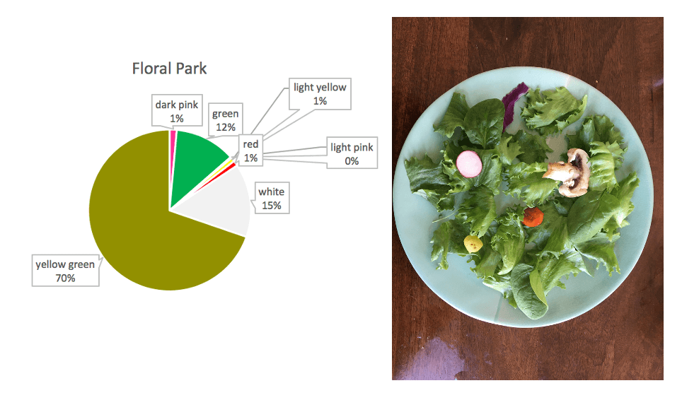
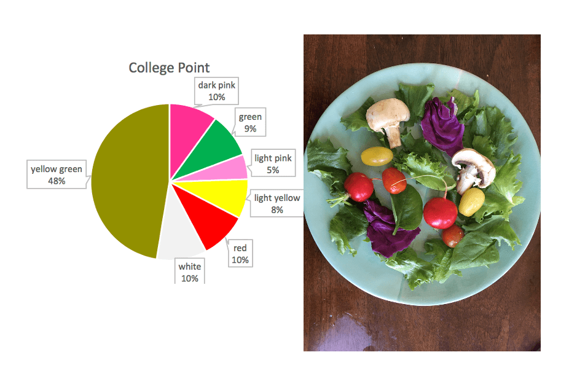
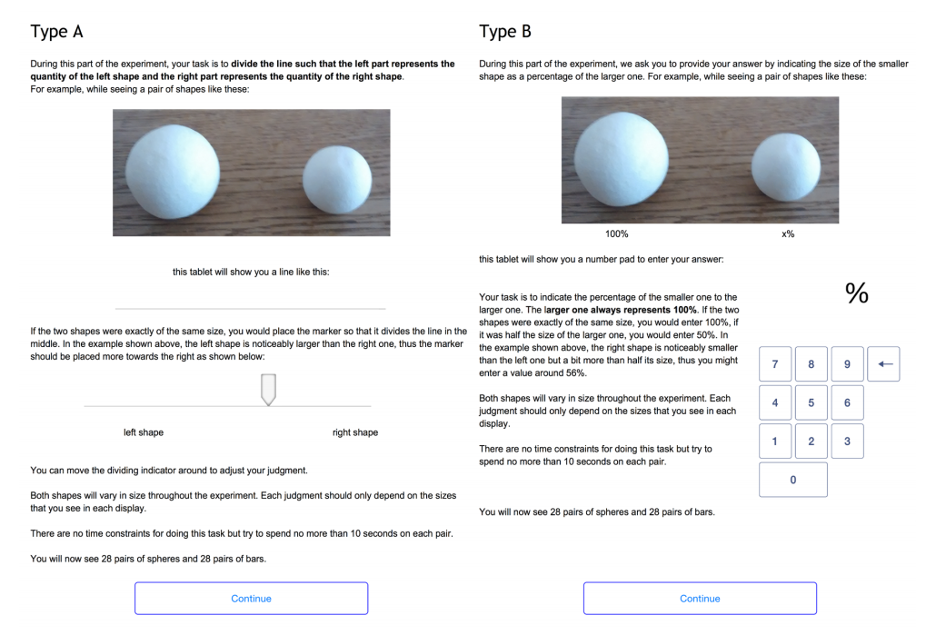

Using data for vehicles from the U.S. Department of Energy’s Fuel Economy measurements, I created a data sculpture to show the effect of air pollution on people’s vehicles.
Steve’s Chrysler has an air pollution score of 3, so he is wearing a bandana
In order to present this data, I used different masks to restrict breathing that aligned with a vehicle’s air pollution score. The worse the car’s air pollution, the more restrictive the mask would be. The rating is on a scale from 1-10, (with the higher rating meaning less air pollution from the vehicle) so a rating of 10 would have no mask at all as compared to a 1 having a heavy duty mask. The reason why the mask is used to represent the air pollution score is so that way people would have more trouble breathing naturally, which would happen with more and more air pollution.
This would ideally be part of an exhibit, where people who take part are given a mask that corresponds with the rating of the vehicle they arrived in to the exhibit. They would have to walk around the exhibit, constantly aware of the toll their car is having on the environment. For a less active experience, this sculpture could be more static in an exhibit, showing what different masks would look like next to various types of vehicles.
Sandy’s Dodge has an air pollution score of 1, so she is wearing a more restrictive mask
I chose to make a sculpture of my group’s analysis on the differential effects of selected climate factors on grape harvest date of French wines. In my sculpture, I represent grapes as wine bottles, precipitation as glasses of water, and temperature as candles. I map the data by varying the precipitation with the number of glasses of water uses and varying the temperature with the number of candle wicks used. My sculpture includes a timeline of grape harvest dates (January-June) and (July-December).
I try to show that between 1901 and 1980, both precipitation and temperature had statistically significant effects on changes in grape harvest dates. In particular, higher precipitation corresponded to later grape harvest dates (shift wine bottles to the right) and higher temperatures corresponded to earlier grape harvest dates (shift wine bottles to the left).
I then try to show that between 1980 and 2007, only temperature had a statistically significant effect on changes in grape harvest dates. Increasing the precipitation does not shift the wine bottles, but higher temperatures yield a strong and significant leftward shift of the wine bottles.
Data:
Grape Harvest Dates
NOAA National Centers for Environmental Information
Climate
Factors (Temperature, Precipitation, and Palmer Drought Severity Index)
These salads are a data sculpture represent the diversity of flower blooms in NYC. The diversity of vegetables in each salad represents the diversity of flowers in the dataset, with the amount of each corresponding to the proportion of each flower.
DATA
The original dataset (link here) was 2015 data from the NYC Tree Census from the NYC Parks Department. https://datastudio2020.datatherapy.org/2020/03/05/the-city-in-bloom/ The data gave various types of trees producing flowers of different colors across different seasons.
AUDIENCE
I thought about targeting a local community meeting where neighborhood tree and flower planting would be discussed. I positioned myself as a non-profit or city department educating and advocating for greater plant diversity within NYC neighborhoods. Therefore, I wanted a conceptually simple data sculpture that was interactive and could spark discussion.
I decided to create a salad with the idea that it would double as food for a town meeting and an ice breaking discussion topic. Some attendees could be served the less colorful salad and others the more colorful one, and it could be revealed once the meeting started that these were data sculptures. It could help ease attendees into the meeting subject while making data more digestible.
CONCEPT
I created three salads representing three neighborhoods in NYC with noticeably differing flower diversities.
The idea of using leaves and other plants in a salad is meant to continue the narrative of natural diversity in this story. Also, it reinforces the idea that the best salads have a diverse mix of plants.
I mapped vegetable type onto flower color:
Dark Pink — Purple Cabbage
Light Pink — Radish
Red — Red Cherry Tomato
Light Yellow — Yellow Cherry Tomato
Yellow Green — Romaine Lettuce)
Green — Spinach
White — Mushroom
The resulting sculpture emphasizes the importance of fostering diverse neighborhood ecologies — with the idea that the colorful salad is most appealing to look at just like how a more ecologically colorful neighborhood is beautiful to live in (though I realize both are somewhat subjective).
CHARTS
Breezy Point chart and saladFloral Park chart and saladCollege Point chart and salad
REFLECTIONS
Making a data sculpture was a fun exercise. In doing this sculpture, I felt limited on resources and data. I would have liked to have more detailed data and used that to make larger, more colorful salads. I think having a bigger plate would have had more aesthetic impact. I was also not sure about how I arranged the salad — I mixed the vegetables but I also considered a pie chart formation on the plate.
“Wow, I truly believe I’m looking at an iceberg made of paper,” Edna definitely did not say to herself
Summary
For my dataset I chose the “Freedom of Information Act Annual Reports 1975-2018” set compiled by A. Jay Marquette, a journalism and media studies professor at Marquette University. The dataset collects the number of received, processed and denied/granted (plus a lot of other details) FOIA requests sent to federal departments. I chose the data set because I filed a FOIA in December and have been curious about the process ever since.
FOIAs, which give the public the
right to request access to federal documents, memos and internal communication,
are essential in keeping the government open and accountable. Investigative
journalists, for instance, use FOIA requests to gather information and uncover
wrongdoing. But the Freedom of Information Act, signed in 1967, only grants
access to make a request; it doesn’t guarantee that you’ll get the documents
you’re looking for.
The “FOIA Annual Reports” dataset
demonstrated two trend: a steady increase in the number of FOIA requests filed
and, for certain departments, an increase in the number of partial grants and
full denials of requests. I focused the sketch on the Department of Homeland
Security because of the number of FOIA requests sent to the DHS, the drop in
full grants given, and, lastly, the large number of issues that fall under the
DHS purview (terrorism, immigration, pipelines, etc). The DHS was established
post-9/11 and there is information on FOIA requests from 2003 to 2018.
The sculpture is a two-story glass aquarium with 16 “icebergs” (one for each year of FOIA requests and they are made out of paper to represent government documents) in a contemporary art museum. Visitors enter on the second floor and see just the tip of the iceberg, which represents FOIA requests granted in full (a layer of opaque blue limits their view of the underside). Visitors then descend to the first floor, where they get an underwater view of the icebergs, showing the vast underbelly of FOIA requests that are denied in full or only partially granted. As the years pass, the size of the underside of the iceberg increases.
This sculpture plays on the imagery of an iceberg and the overused “tip of the iceberg” phrase to show the increasing number of denied FOIAs and asks the museum’s visitors to remember that each denied FOIA is a story that is being hidden from the American public.
Sketch
Shocked by the number of FOIAs that are not granted in full, Batgirl looks away in despair
The sketch is (obviously) a very
paired down version of the sculpture using a Pyrex casserole dish to represent
the aquarium, two icebergs (2003 and 2018) made of tissue paper and tape, and two
Lego figurines (Batgirl and Edna Mode) to represent visitors at the museum.
It’s hard to see in the image,
but the icebergs have different sizes since there were 160,902 requests in 2003
and 374,945 in 2018. Shown above the water (denoted here as the blue platform
on which Edna stands) are the total “granted” requests (40% in 2003 and 6.9% in
2018), while below is every FOIA that was completely denied or only partially
granted.
I think we all recognize the image of blacked-out government documents. To keep with the theme of information that is withheld, descriptions about the data of the sculpture will also be displayed with partially blacked out sentences and words.
In putting the sketch together, I quickly noticed how hard it is to include more information into a data sculpture, both for aesthetic and comprehension purposes. For instance, the government has a number of exceptions it can evoke to deny a request. I tried to include that information by creating different bands on color on the iceberg underside, but it looked silly and was hard to comprehend.
References
Wagner, A.Jay, “[Data] Freedom of Information Act Annual Reports 1975-2019” (2020). College of Communication Research Data. 1. https://epublications.marquette.edu/comm_data/1
In this paper,a study of how people perceive physical data visualizations reveals that (1) people are quite good at interpreting 3D bars based on length (2) people are not very good at interpreting spherical volumes, though slightly better with spherical surface areas.
Some interesting takeaways include the context/history of design psychology and a mathematical model for perception, which I summarize below.
Context
The paper situates itself within a field of design psychology that has historically tried to understand how to effectively communicate information through visual presentation. Past researchers in this field helped define best-use principles for 2D data charts and for mapping — such as developing the idea that position of a dot might be better at communicating quantitative information than size of a dot in a chart (see work of Cleveland and McGill).
However, little research exists for 3D data physicalizations. Additionally, past studies have shown significant variation in volume perception among people.
Application
The authors note that data physicalizations are increasing with the increased access to fabrication technology, increased usage of data and other factors. Past research has shown data physicalizations can aid communication by increasing engagement and engaging non-visual senses. Knowing which variables people have trouble perceiving accurately can help designers make more informed decisions, the authors say, but note this does not mean those variables should necessarily be always avoided.
Examples of actual usages of spheres and bars for data representation.
Experiment
The study asked participants to see a series of shapes meant to represent certain quantities, and then to judge their relative sizes.
The experiment’s user interface allowed participants to deliver their response via a slider or via entering a number. Participants were able to see the shapes physically and via an image.

Experiment setup.
Math Model
The authors include a mathematical model for quantitizing perception: Steven’s power law, which relates perceived quantity (P) to a true quantity (S) through two factors a and b which are to be experimentally determined.
P=bS^(a)
However, they note that the disadvantage of this model, which represents perception through a single variable, is that perception can vary widely between people.
Results
Bars: People perceived bars quite accurately, in line with previous studies for 2D bars. Perception followed a more linear response curve than for spheres— meaning that as the actual size (S) went up, perception (P) went up correspondingly.
Spheres: People are likely to perceive data incorrectly if it is represented in terms of sphere volume, with a tendency to underestimate (19% error rate). However, if data is encoded in terms of sphere surface area, accuracy improves (9% error rate).
For spheres, perception showed a slightly more exponential curve, meaning that as actual size (S) went up, perception (P) went up as well but more slowly at first.
It is also notable that in interviews participants generally expressed lower confidence in their sphere estimates, some apologizing to say they were “not very good at this”.
Variation: The authors found little individual variation in estimates, suggesting these results are useful as representation of common perception inaccuracies.
Questions to Think About
What other aspects of data physicalization perception could benefit from this type of psychological research?
Based on these findings, what might be some direct actions that educators or data visualizers can take to make their work more effective?
What might be some limitations of this type of study? And how might this type of study be augmented?
Some personal thoughts
In my opinion, it was quite interesting to better understand the history of design psychology research, and how it may have contributed to the more standardized approaches to mapping and 2D charts we see in the professional setting today. However, it can also be argued that this type of research historically contributed to standardizing 2D visualizations in a way that scholars advocating for more creativity within data representation or mapping are pushing against today (whether authors intended to or not).
On a more conceptual level, I felt that treating perception as purely a scientific, and mathematical, variable may ignore the more complex way that people interact with objects and aesthetics. The researchers asked participants in the study to try to quantify their perceptions, but I don’t think this act of quantifying is what people naturally do when seeing a set of objects. When I see a data sculpture, I don’t actively try to estimate the sizes based on perception — and I’m not sure my subconscious does either. I would be interested to see more work that might delve into what narratives people take away from data sculptures whether or not they involve a perception of quantities.
I also feel that perception cannot be treated as an unchanging biological variable, but as something that evolves temporally and may vary spatially. Art historians have suggested that society’s ability to perceive depth may have been affected by developments in painting, and scientist have found differences in perception across different cultures. While reading this paper, I wondered how proliferations in 2D visualizations might have affected the historically accepted findings from design psychology, and how other developments may similarly affect 3D physicalizations.
Finally, I noted that the authors presented fairly small objects and wondered how these size perceptions might vary at larger scales — scales comparable to the human body for example.